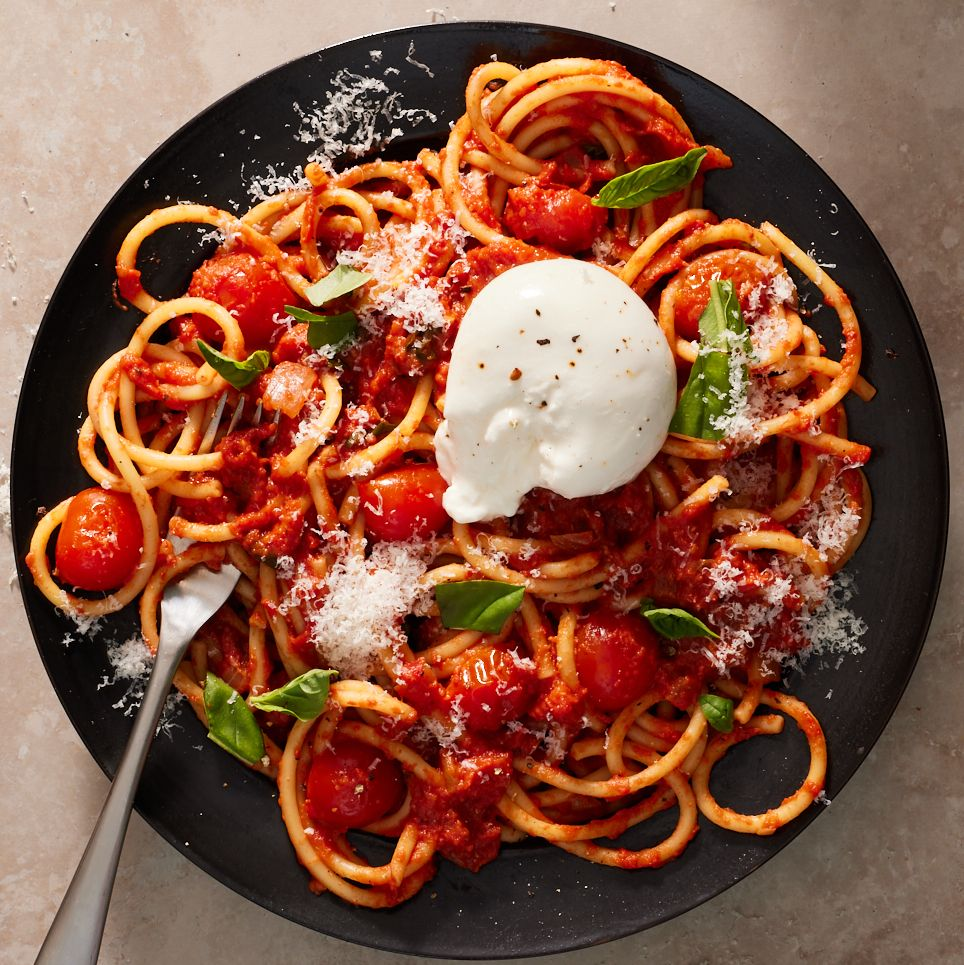

Creamy Tomato Pasta with Burrata

Description
To make this you will need
- 1 tbsp extra-virgin olive oil
- 1 medium yellow onion, chopped
- 3 cloves garlic, minced
- 1 tbsp. tomato pasta
- 2 cups halved cherry tomatoes
- 1 (28-oz.) can crushed tomatoes
- 1/2 cup heavy cream
- 1/4 cup packed basil leaves, torn, leave some for serving
- Kosher Salt
- Large pinch of red pepper flakes
- 1 pound bucatini
- 1/4 cup finely grated Parmesan, leave some for serving
- 8oz. burrata
Directions
-
Step 1
In a large, high-sided skillet over medium heat, heat oil. Cook onion, stirring occasionally, until softened, about 5 minutes. Add garlic and cook, stirring, until fragrant, about 1 minute more. Add tomato paste and stir to coat veggies. Add cherry tomatoes and cook, stirring occasionally, until just starting to burst, about 5 minutes. Add crushed tomatoes, cream, and basil; season with salt, black pepper, and red pepper flakes and stir to combine. Bring to a boil, then reduce heat to medium-low and simmer, stirring occasionally, until thickened and slightly reduced, about 10 minutes.
-
Step 2
Meanwhile, bring a large pot of salted water to a boil. Add pasta and cook, stirring occasionally, until al dente according to package directions. Drain.
-
Step 3
Add pasta and Parmesan to sauce and toss to combine.
-
Step 4
Transfer pasta to a platter or divide among bowls. Top with burrata and garnish with more basil and Parmesan.
Orginal Recipe at https://www.delish.com/cooking/recipe-ideas/a40302467/creamy-tomato-pasta-with-burrata-recipe/